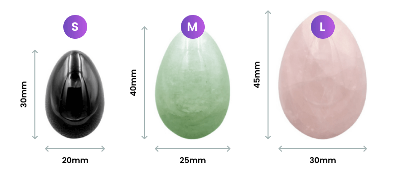
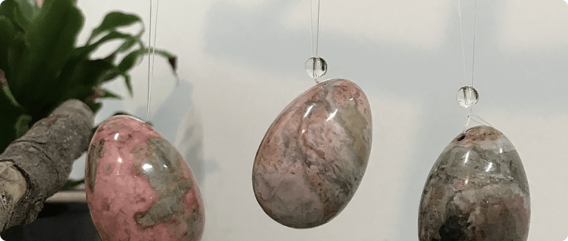
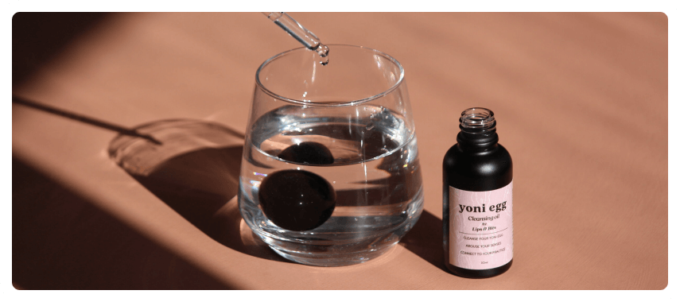
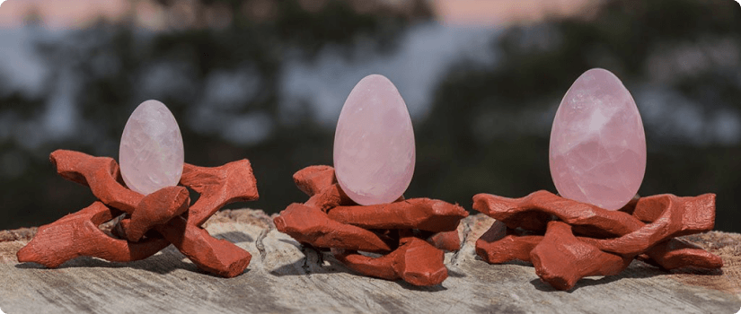

Many beginners feel intimidated as they are unsure how to use yoni eggs. Yoni eggs are adaptable to all lifestyles regardless of age. The reason each person seeks to use the yoni eggs will differ depending on their circumstance, intentions, needs, and desires. This makes the size and type of stone to differ for each woman.
How to Choose Your Yoni Egg
Before learning how to use the yoni egg, you must first have one. There are several factors to consider when choosing a yoni egg:
Yoni Egg Sizes
What yoni egg size should you pick? Yoni eggs come in three different sizes with different lengths and width:
-
Small Small yoni eggs measure about 1 inch wide and 1.6 inches long
-
Medium Medium yoni eggs are about 1.2 inches wide and 1.8 inches long
-
Large Large yoni eggs measure about 1.4 inches wide and almost 2 inches long
When choosing the size of your yoni egg, remember that every woman is different. The yoni is incredibly elastic and although the large size may seem scary, it is suitable for beginners as well. If the yoni egg you choose is too small, it may not be able to stay in place.
The best size for you depends on the following variables:
- Age
Younger women should opt for the small to medium size. Older women may try the medium yoni egg, but most may do better with large yoni eggs.
- Tone
Those with a stronger pelvic tone can go with smaller yoni eggs. Women with a weaker pelvic floor tone should opt for a bigger size
- Advancement in the practice
More advance users can try smaller sizes while beginners may try bigger sizes.
- Athletic activity
Athletes are generally more toned than non-athletes. This means people who are more athletic can opt for smaller sizes. Those with a more sedentary lifestyle may find bigger sizes more suitable.
The medium and large yoni eggs are ideal for most women. For example, a young and active woman who has never given birth to children should choose a medium egg. A woman who has given birth vaginally should choose a large egg. It is not unusual to not be able to feel the egg inside you.
Without toned pelvic floor muscles, it is unlikely for you to be able to hold onto a small sized yoni egg. Therefore, small yoni eggs are generally recommended for women who are advanced in the yoni egg practice. Small yoni eggs are also recommended for athletes and women who have trouble inserting a tampon.
For serious beginners who intend to advance in the practice, a yoni egg set may be beneficial. This allows you to gradually increase the difficulty of the yoni egg practice.
Drilled vs Undrilled Yoni Eggs
Yoni eggs can be undrilled or drilled:
- Undrilled
Undrilled yoni eggs do not have a hole drilled into it. The entire egg is smooth. Undrilled yoni eggs can be removed by pushing out the egg using your vaginal muscles. It is often preferred by long-time users as it is easier to clean.
- Drilled
Drilled yoni eggs have a small hole drilled into them. This allows the user to attach a disposable string to allow easier removal of the yoni egg. Removal can be done by gently tugging on the string making it the preferred yoni egg for beginners. Special attention is required during cleaning to make sure the drilled hole is clean.
Read More: Undrilled vs Drilled Yoni Eggs Guide
Type of Gemstone
After deciding on the size of your stone, you can proceed to choosing the type of crystals. Gemstones can be personal and sacred. Pick your gemstone based on:
- The intrinsic energy of the stone
- Your energy needs
- Your reaction to the stone’s energy
Gemstones have played a crucial role in ancient civilizations. Through lithotherapy, these stones can help you to recover and regain balance. Those who learn how to use these stones find that the stones become their lifelong companions. Some tips that may be helpful are to start by:
Many yoni egg experts have always said that the stones choose its user. If you have access to the stones, pick it up. Feel for the energy in your fingers. Some say they feel tingling. Others claim that you will feel “right”.
The different colors of the gemstones are associated with different chakras. For example, stones that are brown, black, or red are connected to the root chakra. Meanwhile, pink or green stones are associated with the heart chakra.
Different gemstones have unique properties. Choose the stone based on the properties you are looking for. Examples of properties are healing, luck, passion, and more. These properties are further explained in the next chapter.
Getting Your Yoni Egg Ready
Yoni eggs should be cleaned carefully. This helps to keep them in good shape and maximizes the effects for the user. There are two ways to yoni egg cleaning: physical and spiritual. Both these methods should be done as the physical prepares it for your body and the spiritual prepares it for your soul.
Physical
- Washing
Begin by washing your yoni egg with warm water and mild soap. This should be done even with new yoni eggs fresh out of its packaging. You can also wash the egg using a vinegar solution. Rinse the egg with running water that has a similar temperature to the yoni egg.
- Sterilizing
Some experts may recommend boiling the egg for 20 to 30 minutes to sterilize the egg before insertion. If you decide to do this, make sure to increase the water temperature gradually to prevent it from cracking.
In some cases, there is a chance that the yoni egg may crack or chip. The risk is higher for yoni eggs made from amethyst and rose quartz. If this happens, do not use the yoni egg anymore.
- Drying
After it is cleaned, pat dry using a clean towel or air dry. Some yoni egg users add some essential oils such as tea tree oil or lavender to the egg. These essential oils may act as an antiseptic as it is believed to have antifungal and antiviral properties.
- Special Care
If you have chosen a drilled yoni egg, take extra care to clean the drilled area thoroughly. You can use an interdental wire brush or toothpick to help you clean the hole.
Always use a new interdental brush or toothpick for cleaning. It is crucial that you use a hygienic and disposable string for your yoni egg. A good example is unwaxed dental floss.
Spiritual
Each different gemstone has its own unique energy. After you receive your yoni egg, it is important to cleanse and charge it before use. This prevents negative energy from being retained and affecting you.
Cleansing
Cleanse your yoni egg before using it for the first time. Cleansing should also be done regularly to dispel negative energies it picks up from the user. Soaking the yoni egg in saltwater is an effective and easy method.
However, it can be too abrasive and can remove the sparkle or gloss from the stone. While cleansing, imagine light is channeled into the egg. Some methods often employed for cleansing uses :
Charging
You can also charge your yoni egg before using it. This can be done by placing it under sunlight or moonlight. Note that some stones may lose their color if placed under sunlight for prolonged durations.
As it gets paler, some stones may even entirely lose their color. This is often the case for stones that are quartz or colored crystals. Examples include:
Bonding
Once your yoni egg has been cleansed and charged, you can bond with your yoni egg. Some yoni egg users refer to this as programming or setting your intentions. Start by creating a quiet space. Lay down and hold your yoni egg close to you. Tell it your needs and desires. Create your relationship by harmonizing your energy with the stone.
How to Choose Your Yoni Egg
Before learning how to use the yoni egg, you must first have one. There are several factors to consider when choosing a yoni egg:
Yoni egg Insertion
Once you have prepared your egg, find a comfortable position and relax. Apply a generous amount of lubrication on your egg. Take slow deep breaths and gently insert your yoni egg. This process takes time, so try to be patient.
Do not force the insertion. You can also try caressing and stimulating your body. Your body will decide if it is ready for your yoni egg.
When Inserted…
When you have inserted your yoni egg, there are several things you can do:
Yoni Egg Meditation
You can meditate using the yoni egg by holding the egg in your hands or when it is inserted. Relax, reach for your feminine energy and sexual energy. Try connecting with your spiritual self. You can focus on your yoni and breathing. Attempt to sync your breaths while focusing on your energy.
Yoni Egg Exercise
There are pelvic floor exercises you can do while laying down. Try to feel for the presence of the yoni egg. Once you have located it, begin to tighten and release the pelvic floor muscles. Kegel exercises require both contraction and relaxation of the pelvic floor muscles as they are vital as part of the practice.
Having Sex with Yoni Eggs
Yoni egg experts do not generally recommend having sex while wearing the yoni egg, However, some women enjoy using the yoni egg as a sex toy. You can do this best with a smaller egg and have it positioned near the g-spot. Be careful so the yoni egg does not hit the cervix too much to cause pain and soreness.
Safety measures for using Yoni Eggs
Remember that the maximum recommended duration of wearing the egg is 15 to 20 minutes. Start with a short duration and gradually increase your practice time.
Removing Your Yoni Egg
Removal of the yoni egg comes naturally and easily for many women. You can bear down or strain to push the egg out. If it does not, try squatting and pushing, like having a bowel movement. This method is often effective, evidenced by women who have eggs that fall out while going to the toilet.
There are some women who may have much difficulty with removing the yoni egg especially if the uterus is retroflexed. In cases where women are afraid of the egg getting stuck, drilled yoni eggs may be the better option.
The user can gently tug on the string to help pull the egg out. After removal, wash your yoni egg and store it carefully till your next session.
Read More: How to Safely Remove Your Yoni Egg
Certain gemstones are more vulnerable and can chip or crack to harbor bacteria. Always clean your yoni egg physically and check it thoroughly for chips or cracks before insertion. Wear your yoni egg for a maximum duration of 15 to 20 minutes.
Both these steps help to lower the risk of infection. If you are still unsure of how to use yoni eggs, think of the yoni egg practice as similar to vaginal weightlifting, but with a naturally charged gemstone.
Simone, D. Everything You Need To Know About The Transformative Power Of Yoni Eggs. 2020.
Xonecole.
Yoni Egg Magick. 2019. Minx + Muse.
What Should You Believe About Yoni Eggs? Part 2. Bridget’s Botanicals.
Coughlin, S. Where Did The Whole “Yoni” Thing Start? 2017. Refinery29.
Singh-Kurtz, S. Researchers Have Debunked Goop’s “Ancient Chinese” Jade Vaginal Eggs. 2018. Quartz.
Butler, N. A Beginner’s Guide To The 7 Chakras And Their Meanings. 2016. Healthline.